跟着图片操作，完成你的第一个数字员工任务
本手册不是功能名词清单。每一章都对应当前软件界面，并用红色编号标出点击位置。截图使用隔离演示数据，不包含真实用户资料或密钥。
建议从这里开始
10 分钟完成首次使用
第一次不要配置全部功能，只走通下面 6 步。
安装版从桌面打开；便携版运行 Start-XiaoJuClaw.bat。
先用一句“请回复配置成功”确认模型可用。
告诉软件你做什么、服务谁、目标和红线。
从低风险任务开始，例如邮件、周报或文案。
重点核对数字、日期、价格、承诺和外部事实。
完整复制用户数据目录，不要只复制数据库文件。
第 1 章
启动、登录与离线使用
先确认你拿到的是安装版、U 盘便携版还是离线版。
从桌面或开始菜单打开，适合固定电脑长期使用。
完整解压后双击 Start-XiaoJuClaw.bat，不要只复制一个 EXE。
无需云账号；若配置在线模型，该模型服务仍会联网。
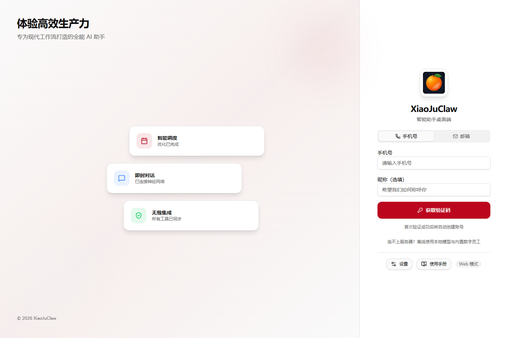
1 2 3 4- 选择手机号或邮箱。输入可接收验证码的账号；昵称可不填。
- 点击“获取验证码”。收到后输入验证码完成登录；验证码过期需重新获取。
- 云端不可用时选择离线使用。本地聊天、知识库等仍可用，激活和云端能力暂不可用。
- 登录前也能打开设置和使用手册。先看手册或先配置模型都可以。
兑换激活码与管理设备
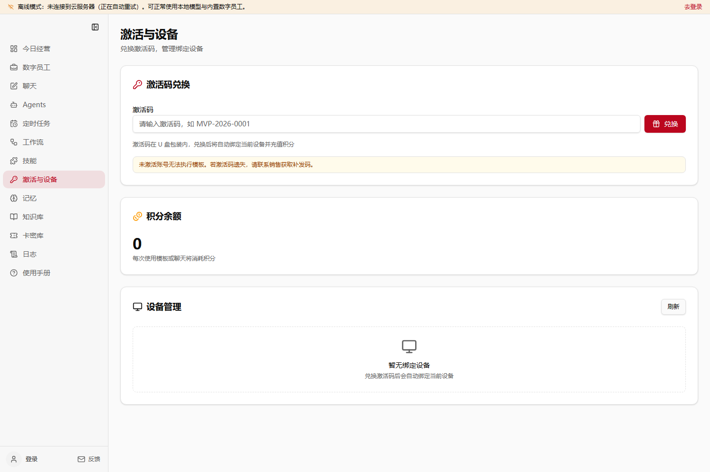
1 2 3 4- 从侧栏打开“激活与设备”。先确认当前登录的是准备长期使用的账号。
- 输入激活码并兑换。兑换前确认套餐、有效期和目标设备。
- 检查权益或积分显示。续费、升级和积分包不是同一种商品，以页面实际权益为准。
- 查看设备绑定。更换长期使用设备前先阅读购买说明或联系售后。
第 2 章
配置聊天模型
没有可用模型，聊天、工作流和经营简报都无法生成结果。
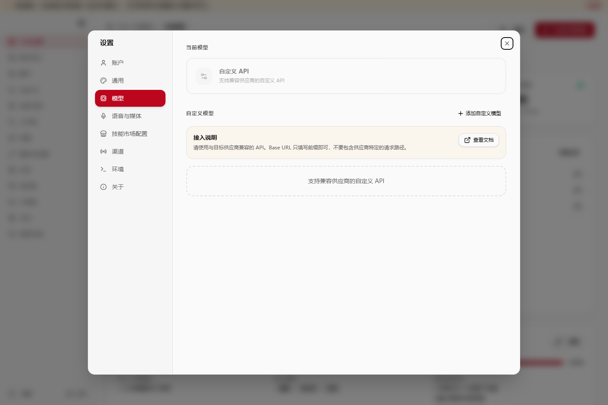
1 2 3- 打开“模型”页。左侧红色高亮表示当前设置分类。
- 确认当前模型。内置模型是否可用取决于当前版本和账号权益。
- 添加自定义模型。按服务商文档填写接口地址、模型 ID 和 API Key，保存后选为当前模型。
进入聊天发送“请只回复：配置成功”。短消息成功后再执行长文档或工作流。
401/403：Key、地址或权限错误；429：限流或余额不足；超时：网络或服务商异常。
第 3 章
用“今日经营”安排一天
这里是“一人公司”的每日入口，不是营收看板。
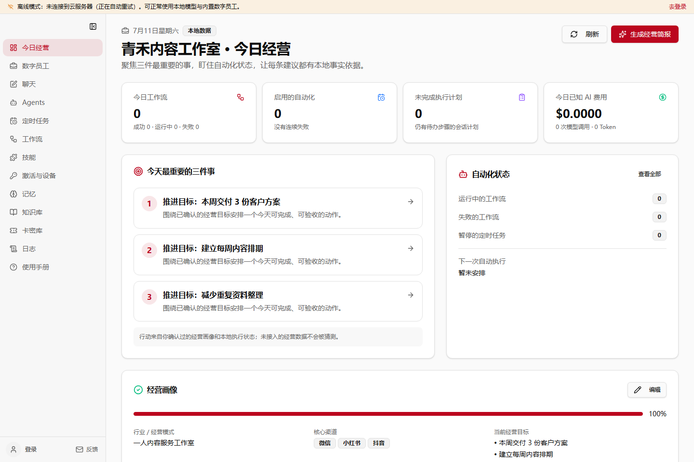
1 2 3 4- 从侧栏进入“今日经营”。顶部可看到工作流、自动化、计划和已知 AI 费用。
- 点击“生成经营简报”。系统只使用已确认画像和本地状态；未接入的营收、订单不会被猜测。
- 优先完成前三项行动。点击行动卡再进入对应功能，不要同时铺开十多个任务。
- 编辑经营画像。至少填写业务、产品、客户、渠道、当前目标和人工确认红线。
第 4 章
从数字员工任务卡开始工作
任务卡是最适合新用户的入口：选场景、填资料、执行。
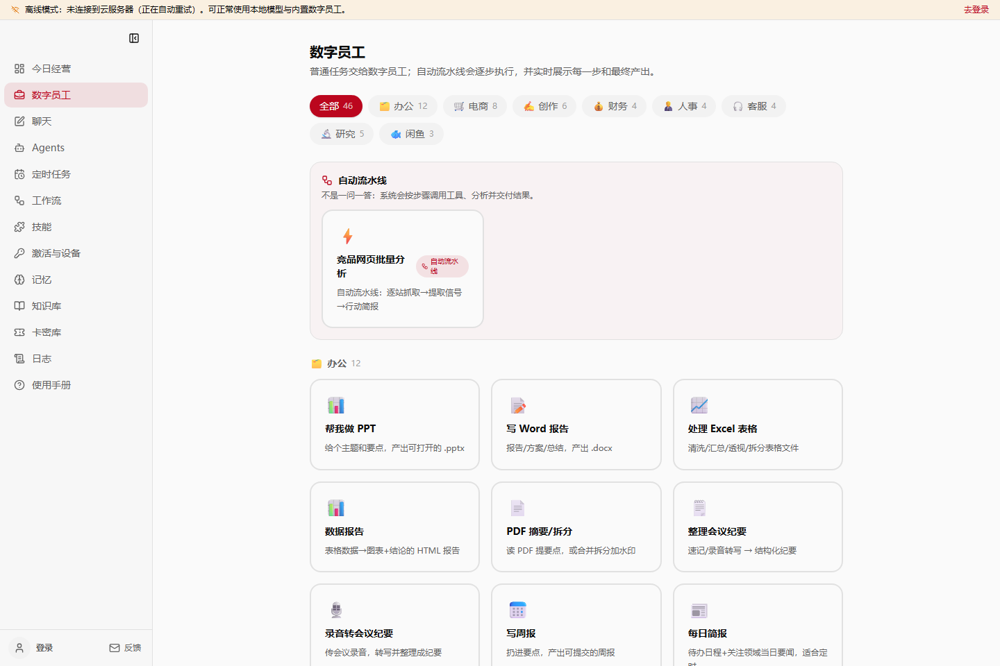
1 2 3- 先按业务分类筛选。办公、电商、创作、财务、人事、客服、研究和闲鱼分别显示相关任务。
- 自动流水线是多步骤任务。执行后进入工作流详情，可以查看每一步和失败原因。
- 普通卡是单次交付。打开卡片，按表单提供主题、资料、语气、格式和验收标准。
第 5 章
在聊天中把要求说清楚
一个可执行请求应包含目标、资料、限制、输出格式和验收标准。
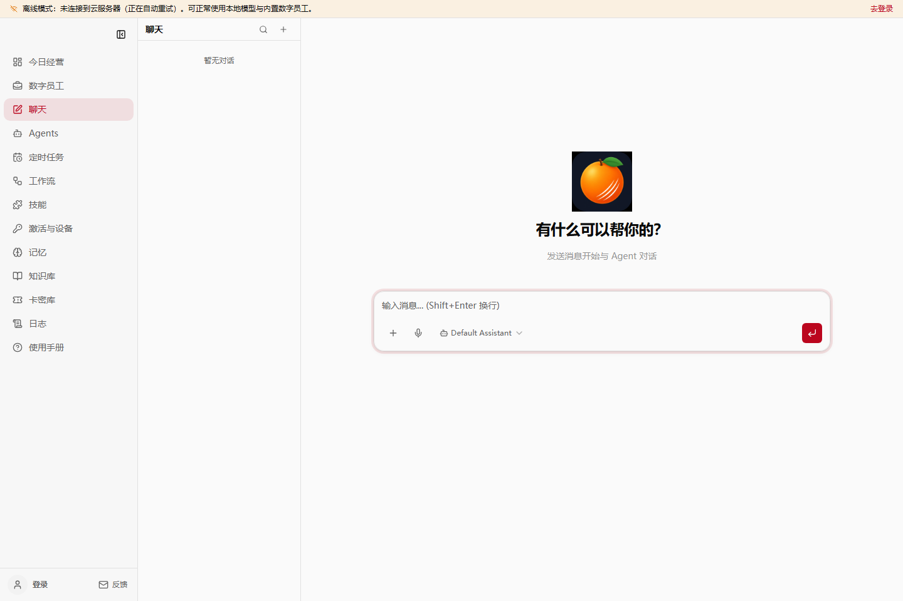
1 2 3 4- 新建或选择对话。不同客户/项目建议分开对话，避免上下文混淆。
- 输入完整要求。示例：“整理附件会议记录，输出决策、负责人、截止日、待确认项；不补写原文没有的事实。”
- 添加附件并选择员工。图片需要视觉模型，录音需要先配置语音识别。
- 发送后等待完成。长任务可要求先建立计划；遇到付款、发布、删除时要求暂停。
第 6 章
管理和创建数字员工
任务卡负责“做什么”，Agents 页面负责“由谁做、用什么模型和技能”。
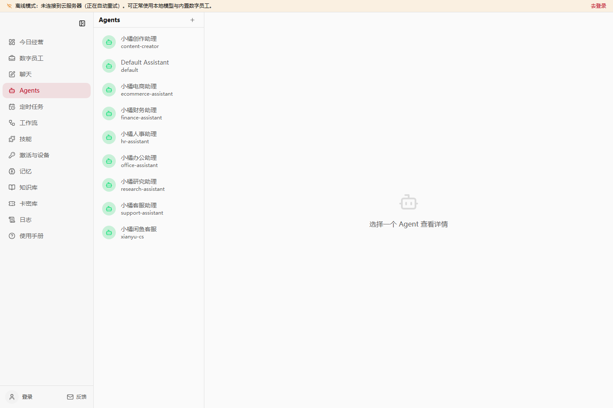
1 2 3- 点击“+”创建员工。先用一句话写岗位，再用 AI 优化人设。
- 选择已有员工。办公、财务、电商、客服等员工职责不同。
- 在详情区检查模型、技能和人设。新员工先用非敏感小任务测试。
第 7 章
建立可引用的知识库
把产品手册、报价、制度和 FAQ 交给员工，并要求回答注明来源。
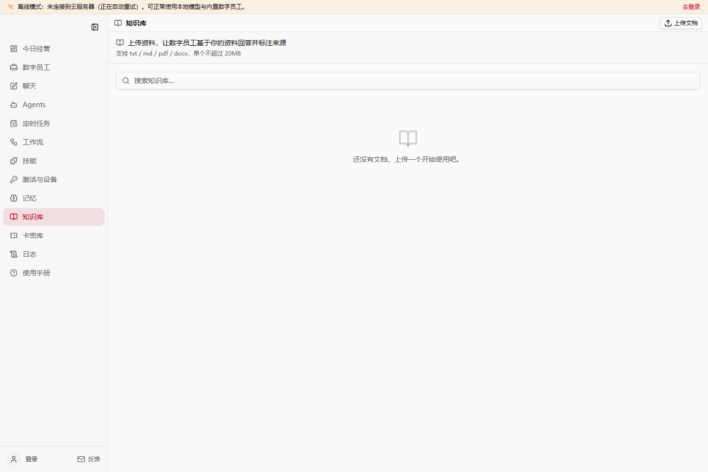
1 2- 点击“上传文档”。等待解析完成；不要上传不需要处理的客户秘密。
- 先搜索一个原文关键词。确认文档可检索，再到聊天中要求“只根据知识库回答并列出来源”。
第 8 章
运行并检查工作流
工作流把重复业务拆成可见、可恢复的步骤。
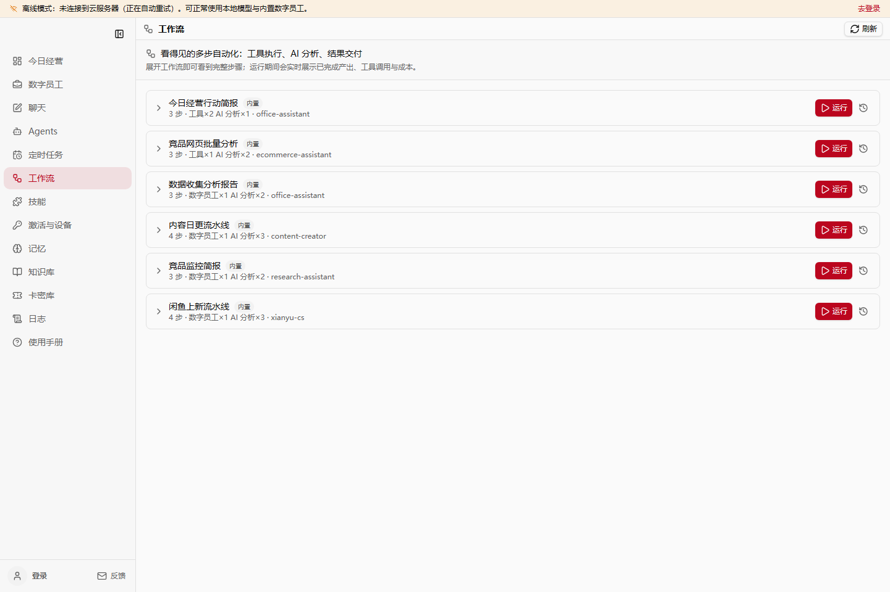
1 2 3- 展开流程查看完整步骤。确认它是否会调用工具、AI 或专用员工。
- 点击“运行”并填写输入。先用少量真实数据验证，不要直接做大批量。
- 打开运行历史。失败时查看具体步骤，修复模型、网络、输入或权限后再点续跑。
第 9 章
创建定时任务
让指定员工按间隔、日周月或指定时间执行任务。
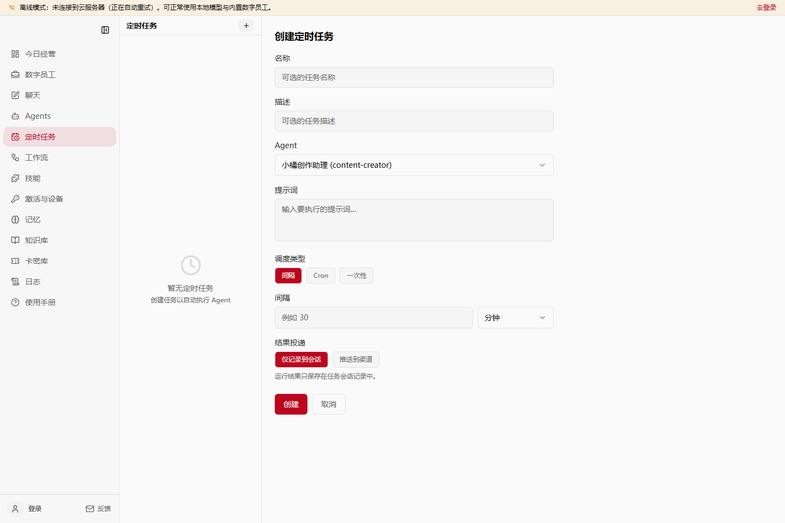
1 2 3 4 5 6- 点击“+”。打开创建表单。
- 填写名称和说明。名称要能看出执行频率和目的。
- 选择员工并写完整提示词。明确输入来源、输出格式和禁止事项。
- 选择间隔、Cron 或一次性。第一次建议设置 5 分钟后的一次性任务。
- 选择结果投递。可只保存记录，或推送到已配置渠道。
- 创建后检查运行记录。连续失败应先停用，避免重复消耗。
第 10 章
接入消息渠道
先用测试账号或测试群完成收发验证，再接真实客户。
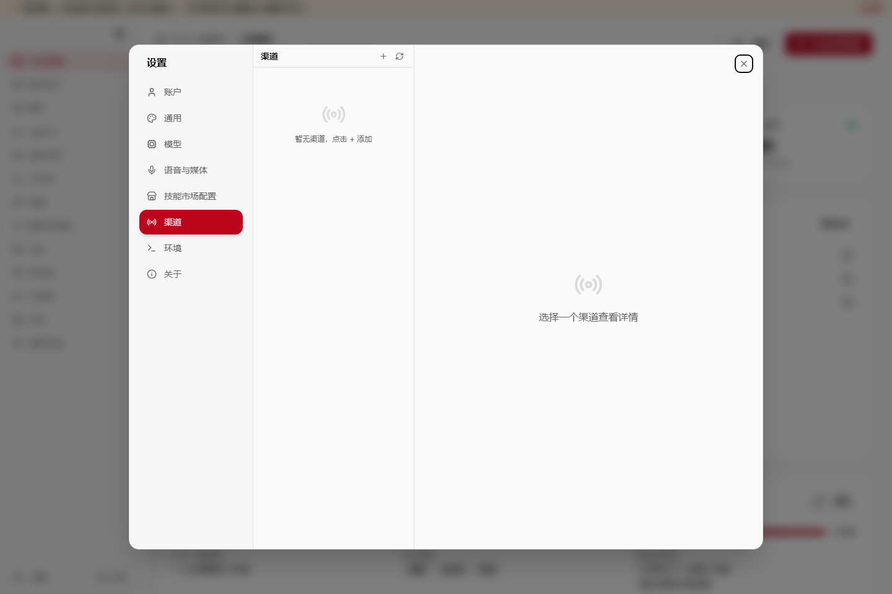
1 2 3- 点击“+”添加渠道。选择平台并按表单填写机器人或应用凭据。
- 在渠道列表检查状态。一个平台可以有多个实例，名称要便于区分。
- 选择实例查看详情。按“收文字 → 发文字 → 发图片/文件”的顺序测试。
第 11 章
配置语音、图片和视频
聊天模型与媒体模型是不同能力，需要单独配置和测试。
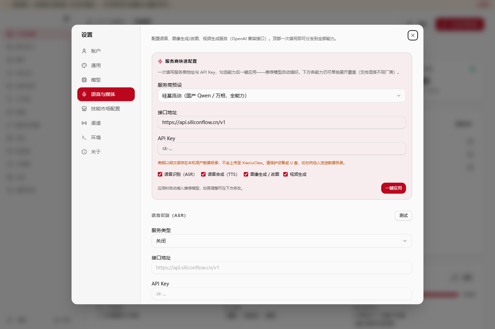
1 2 3 4- 选择服务商预设。预设只负责填入推荐地址和模型，仍需你自己的账号。
- 填写接口和 API Key。确保服务商账号有相应能力和余额。
- 勾选要应用的能力。语音识别、语音合成、图片和视频可分开配置。
- 点击“一键应用”后逐项测试。生成内容仍需检查版权、肖像和平台规则。
第 12 章
技能与记忆
技能决定员工会怎样做，记忆保存长期事实和偏好。
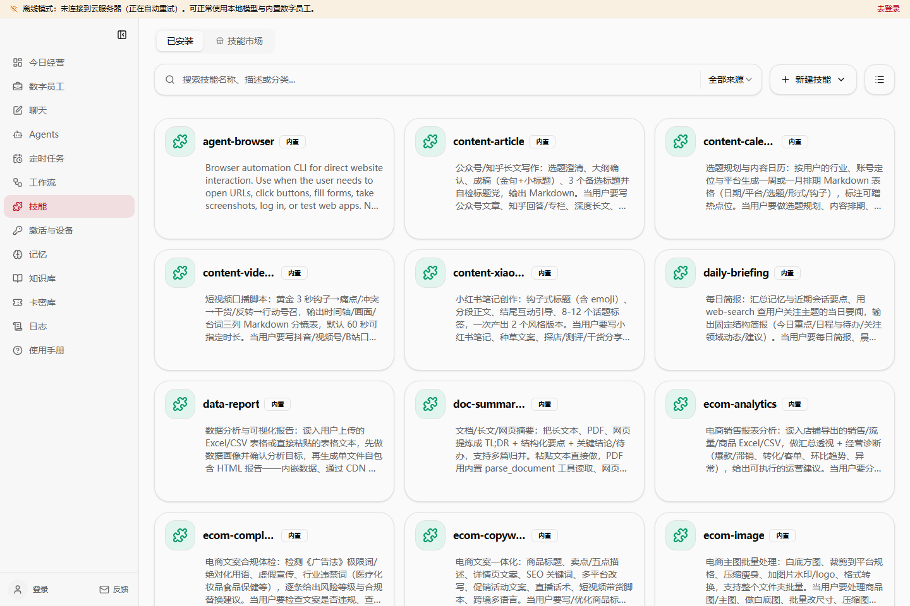
1 2 3 4- 在“已安装”与市场之间切换。先用内置技能，不要为了数量安装无关技能。
- 按岗位搜索。例如文档、表格、电商或研究。
- 新建或导入前检查来源。第三方技能可能包含工具和外部依赖。
- 打开技能卡查看说明。只给员工启用工作真正需要的技能。
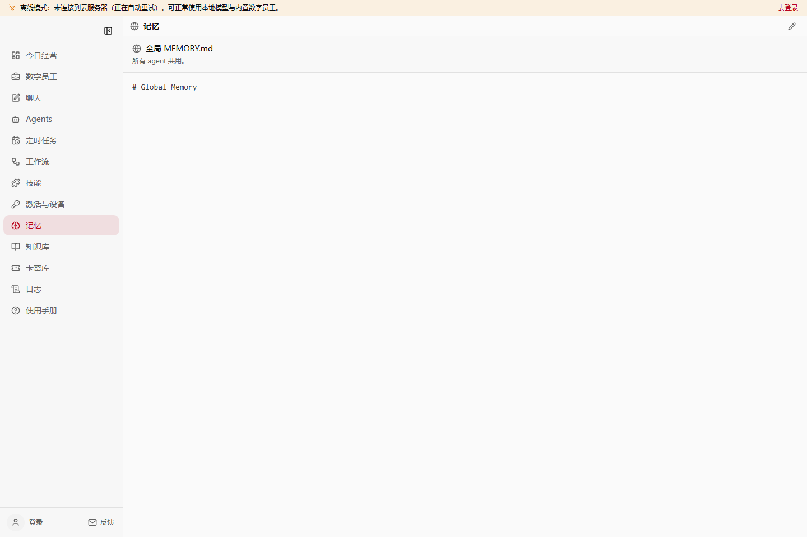
1 2- 点击编辑维护长期记忆。及时更新旧报价、联系人和错误偏好。
- 只保存稳定事实。密码、验证码、银行卡和临时密钥不要写入记忆。
第 13 章
卡密库与闲鱼辅助发货
先建立 SKU 和库存，再由闲鱼客服员工按唯一订单号辅助领取。
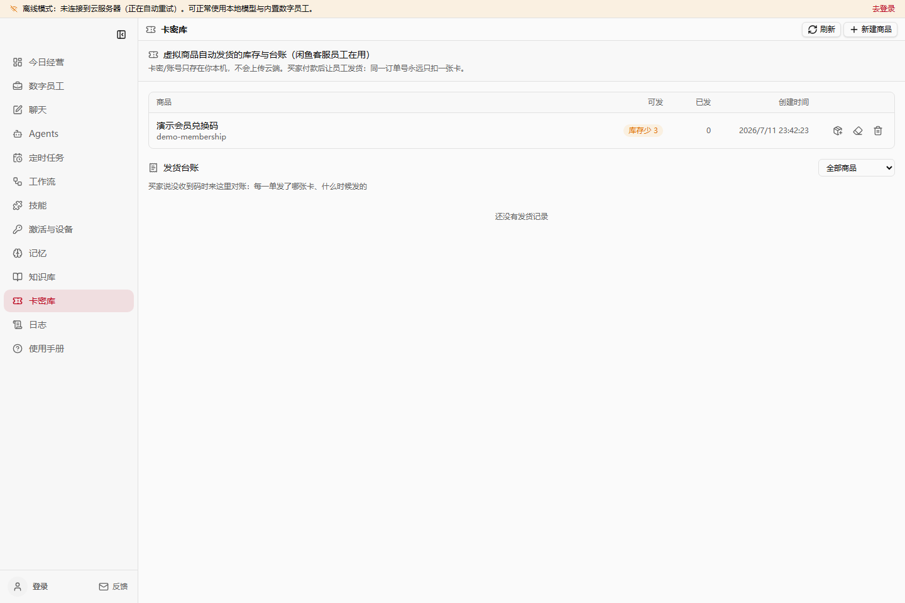
1 2 3 4- 点击“新建商品”。创建稳定的 SKU 编码、商品名和交付模板。
- 检查可发库存。正式使用前先导入少量测试码。
- 使用商品右侧操作导入或清理库存。卡密通常一行一条。
- 在发货台账对账。同一订单号会做幂等控制，避免重复领取不同卡密。
第 14 章
查看日志并排查问题
先记录时间和操作，再从同一时间点找错误。
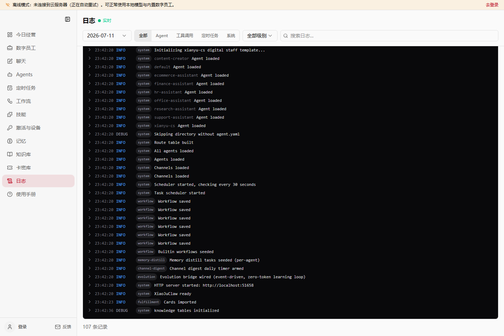
1 2 3- 按日期、分类和级别筛选。模型问题看 Agent/工具调用，定时问题看定时任务。
- 搜索错误文字或时间。常见状态：401/403 凭据，429 限流，timeout 超时。
- 展开相关行查看详情。联系售后时提供版本、时间、操作步骤和脱敏日志。
软件打不开
确认已完整解压、便携目录齐全、磁盘可写；检查安全软件隔离记录。不要反复删除用户数据目录。
聊天没有回复
检查当前模型、接口地址、Key、模型 ID、余额、限流和网络。
工作流长时间运行
打开运行详情看当前步骤，不要连续重复点击运行。
定时任务没有执行
确认软件当时在运行、电脑未休眠、时区正确、任务已启用。
第 15 章
备份、恢复与安全升级
程序可以替换，用户数据绝不能被升级包覆盖。
XiaoJuClaw\程序文件；完整包升级时可以替换。XiaoJuClawRuntime\随包工具；完整包升级时可以替换。XiaoJuClaw-User-Guide\图文操作手册；完整包升级时应同步替换。XiaoJuClawData\Key、聊天、知识库、任务和工作区；永远保留。正确备份
- 等待聊天、工作流和定时任务结束。
- 退出主窗口和悬浮提醒窗，确认两个 XiaoJuClaw 进程都已结束。
- 便携版复制整个 XiaoJuClawData；安装版在“设置 → 环境”查看实际数据路径。
- 把备份保存到另一块磁盘，并标注日期与版本。
完整包升级
- 先完成备份。
- 用新包覆盖 XiaoJuClaw、XiaoJuClawRuntime 和 XiaoJuClaw-User-Guide。
- 保留原 XiaoJuClawData，启动后检查 Key、聊天、知识库和任务。
第 16 章
安全边界与第一天验收
完成下面清单后，再接真实客户、生产 Key 和正式渠道。
必须人工确认的动作
付款、退款、转账、开票、赔偿、价格和时效承诺。
发布、改价、发货、删除、库存清零和批量修改。
扫码、验证码、风控、客户资料、完整卡密和商业机密。
第一天验收清单
- 能够启动并确认版本与交付形态。
- 登录或离线模式已说明清楚。
- 模型短消息测试成功。
- 经营画像使用真实但非秘密的信息。
- 至少完成一张低风险任务卡。
- 上传一份测试知识文档并能检索。
- 运行一条工作流并看懂步骤状态。
- 创建一个 5 分钟后的一次性任务。
- 如使用渠道，已在测试会话验证收发。
- 如使用卡密库，已用测试 SKU 和测试订单验证。
- 能找到日志和本手册。
- 退出软件并完成一次完整数据目录备份。